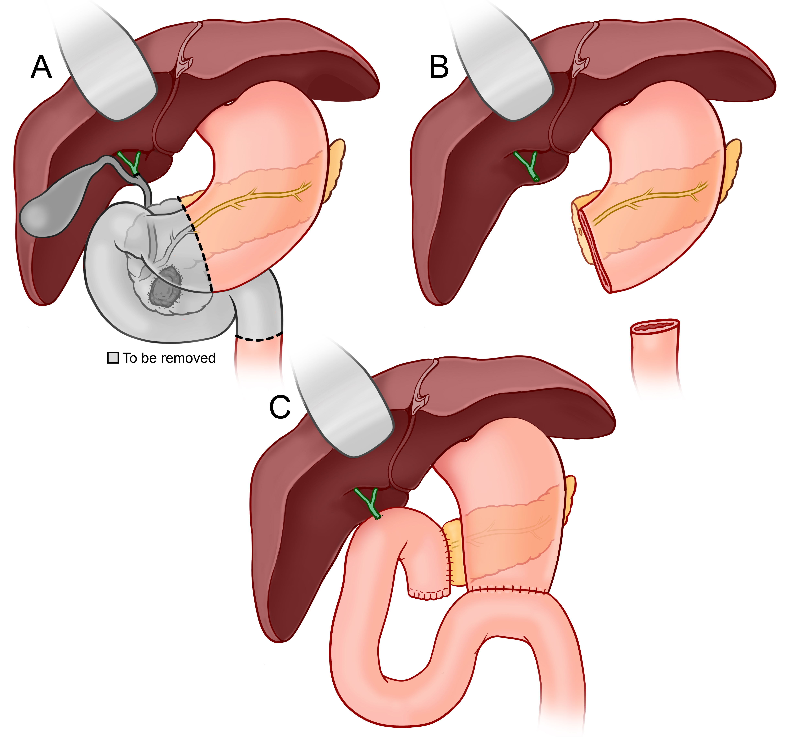

Surgery
Whipple Procedure
Also called pancreaticoduodenectomy — the standard surgery for tumors in the head of the pancreas.
What Is the Whipple Procedure?
The Whipple procedure is the most common surgery for pancreatic cancer involving the head of the pancreas. It removes the part of the pancreas where most tumors arise, along with several connected structures. After removal, the remaining organs are carefully reconnected to restore digestion.
The operation typically takes 4–7 hours and is performed under general anesthesia. It is one of the most complex operations in abdominal surgery and is best performed at high-volume centers where outcomes are significantly better.

What Is Removed
The following structures are removed as a single specimen to ensure complete tumor removal with clear margins:
Reconstruction
After the resection, three connections (anastomoses) are made to restore digestive function:
What to Expect
Before Surgery
You will meet with the surgical team, anesthesiology, and often a dietitian before your operation. Pre-operative labs, imaging, and cardiac clearance are standard. Many patients receive neoadjuvant chemotherapy (and sometimes radiation) before surgery to shrink the tumor and treat microscopic spread.
In the Hospital
Hospital stay is typically 7–10 days. You will be encouraged to get up and walk the day after surgery. A drain is left near the pancreatic connection to monitor for fluid leaks. Diet is advanced gradually from clear liquids to soft foods over several days.
At Home
Full recovery takes approximately 6–8 weeks. Common challenges during recovery include fatigue, changes in bowel habits, and managing diet. Most patients require pancreatic enzyme replacement therapy (PERT) with meals to aid digestion.
After Recovery
Adjuvant chemotherapy is recommended for most patients after the Whipple procedure, beginning 4–8 weeks after surgery. Regular follow-up with imaging (CT scan every 3–6 months) monitors for recurrence.
Questions About the Whipple Procedure?
Dr. Correa performs the Whipple procedure at Mount Sinai in New York City. Contact us to schedule a consultation or discuss your case.